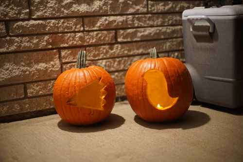
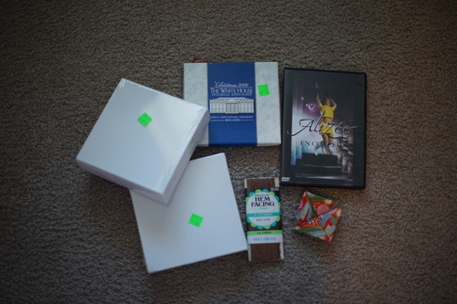
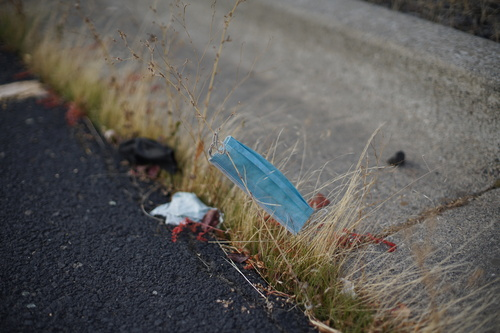

i had a great halloweenie! we carved pumpkins and drank spicy water and tea and i even watched the crow with ryan on devils night!! he says i made him watch it last year too but i cant remember ;u;
i stole ryan's nichijou theme this year. he did mogura and i did karasu. i tried to make the bandana but i ended up knocking it out so he doesnt get to talk i guess. oop
i got my camera about a year ago now! no regrets and i think i picked the right one. ive had so much fun with it and i hope to spend many more years with it. kinda h*cked up that i dont own a doll worth more than my camera tho...
here's my combined thrift store haul. i went last week too and didnt get much.
is it a coin purse? i really dont know but i like it.
i got another pikachu pin and i really dont know what to do with all my pins at this point so i cut out a cardboard backing for my itabag and shoved some in. even normies carry itabags now. its weird. i like my uncomfortable komasan itabag best but he takes up like half the bag!!! i cant even fit my stuff in with him in there
i got two (2) more double lucky eggs! one on 10/29 and one today! insane luck!! maybe it was a good day to enter a volks lottery??
i was thinking about making a JS gallery script since clicking through my blog posts really isnt the best way to look at pictures. i was also wanting to upload some of my old doll meetup photos! i had so much fun those days. i looked at the halloween ones i took and theyre so cute!!
it turns out my deviantart accounts have a lot more files than i have on my current computer. i reset 4 of my accounts passwords and looked through the stored deviations and wow i do not have most of my art. i dont think i deleted them but where did those files go?
i started fuko's route in clannad. she's my favorite girl but i'm nervous about getting her ending. also kotomi's ending was rougher than i remember from the show. these girls have got it tough...
ryan says hi!!!